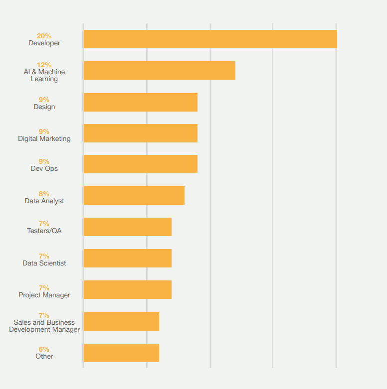

As a web development student that is graduating later this year, understanding the digital industry in and around the UK is very important. The digital industry is a relatively new industry; however it is one of the fastest growing, with an 13.2% increase of employment from 2014 to 2017 (Tech Nation, 2018).
Each year reports such as “Tech nation” and “Manchester Digital Skills Audit” are published that help give insight on the digital industry’s performance as well as giving important information such as skill shortages and the most desired job roles. The reports summarise key findings and show what has changed over the last 12 months and the potential reasons behind these changes.
One thing I love about these reports is that they are all easy to understand and digest with the constant use of diagrams and charts.
Having lived in the northwest of England my entire life (originally from Blackpool), I was eager to research more about the industry I will be joining when I graduate. What I didn’t expect to find from these reports was there was a huge interest in the digital industry within the NW of England. This is evident as at least 10% businesses surveyed have relocated to the north west, mainly Manchester (Manchester Digital, 2018). This is extremely promising for my future career; as I’m already living in a place that businesses are swarming towards.
Not only am I lucky enough to already live in the thriving digital area of the UK, 70% of businesses recruit graduates, with 28% of those coming from MMU (Manchester Digital, 2018). As a student these figures are highly encourageable as I was worried that I wouldn’t be able to find a suitable job after leaving university. I don’t want my degree to go to waste!
On the flip side , research showed that companies are more likely to teach themselves and using peer learning to learn new skills rather than recruiting those skills from universities because only 13% of businesses felt that graduates had the technical knowledge for work reediness (Manchester Digital, 2018) but I am not worried about this as I believe I have learnt lots of valuable skills whilst at university that companies love to employ.
The weaknesses of these reports are that they are figures from last year. This can become a problem because the digital industry changes fast and what was important last year, may not be this year. And with Brexit just around the corner there could be a huge impact on the industry, and this is already evident with 45% of businesses saying that Brexit has affected their company negatively (Manchester Digital, 2018).
To conclude
These reports have given me the understanding of the digital industry requirements, where the growth is and upcoming roles that will need to be filled and who better by than me.
Knowing that the role of developer Dev Ops are the most fought after roles, with JavaScript being the most desirable programming language, I should give myself time to develop these skills further. This would mean learning more JavaScript and PHP even if I don’t end up becoming a front-end developer, these skills will still be incredibly useful.
As for my future I am still undecided what kind of role I would like to join, but I feel confident that in this ever-growing industry I will find a job that is perfect for me. Ideally, I would like to be a freelance wed developer but roles such as UX sounds like a great fit for me.
To keep up to date with the digital industry I recommend you attend meetups and according to Tech Nation only 0.03% of tech meetups are closed, meaning that the other 99% are available (Tech Nation, 2018) and give you the opportunity to speak with professionals in the digital industry.
One meetup I have just recently started to attend is NUX. The only downside is that this is a paid event, which I was lucky enough to receive a free ticket from university. but it gives you the opportunity to speak the other user experience professionals as well as fantastic talks throughout the day. And as a bonus you get lots of free goodies.